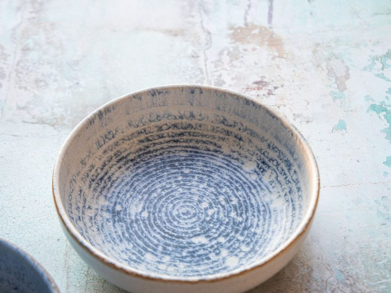
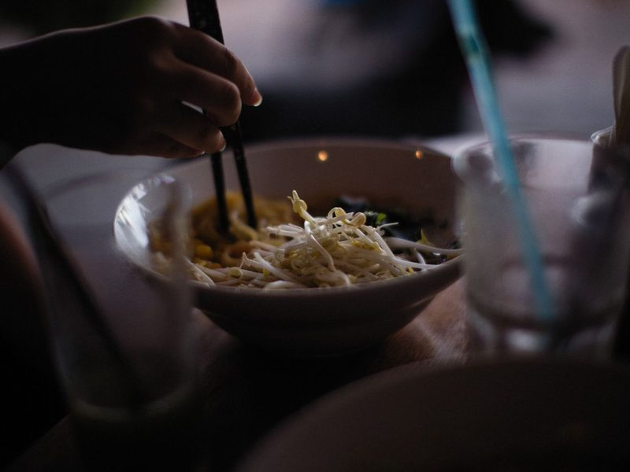
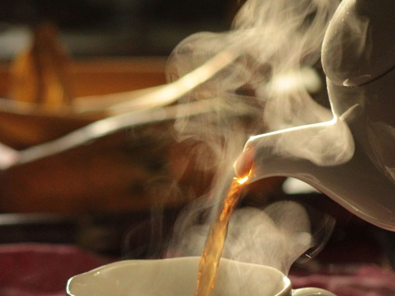
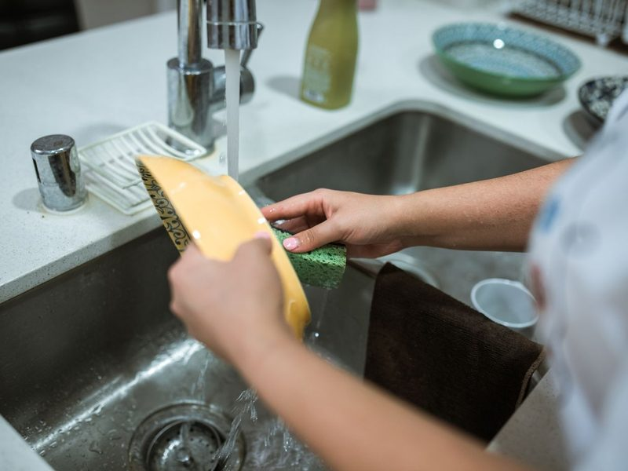
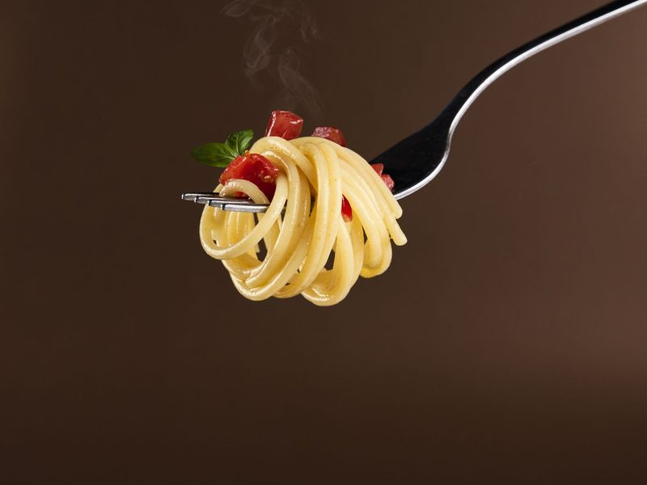
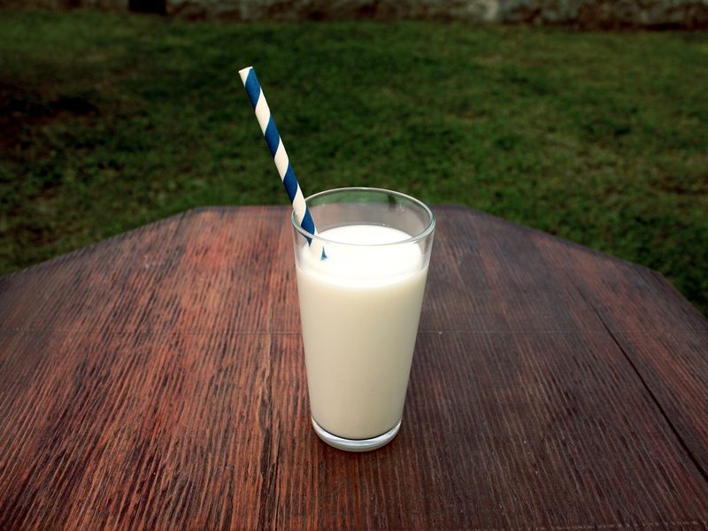
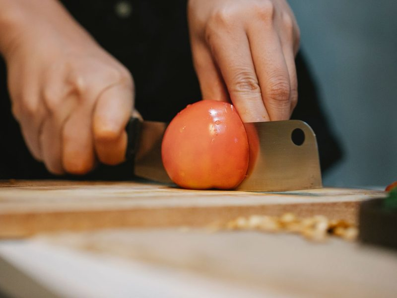
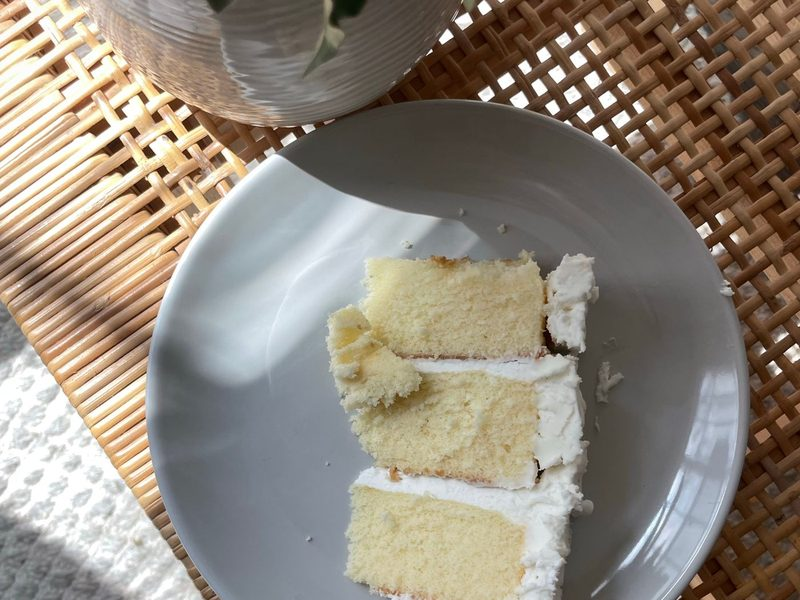
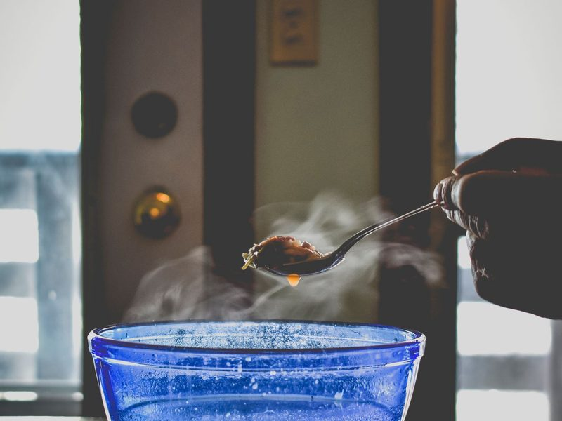

| 餐具 | 量詞用法 | 中文 |
|---|---|---|
| bowl 碗 | a bowl of rice／soup | 一碗飯／湯 |
| cup 杯子 | a cup of tea／coffee | 一杯茶／咖啡 |
| glass 玻璃杯 | a glass of milk／water | 一杯牛奶／水 |
| plate 盤子 | a plate of fried rice | 一盤炒飯 |
| chopsticks 筷子 | a pair of chopsticks | 一雙筷子 |
| 單數 | 複數 | 規則 |
|---|---|---|
| knife | knives | f 變 v 加 -es |
| glass | glasses | -s 結尾加 -es |
| dish | dishes | -sh 結尾加 -es |
| cup／bowl／fork／spoon／plate | cups／bowls／forks… | 直接加 -s |
| chopsticks | chopsticks | 一雙要說 a pair of |